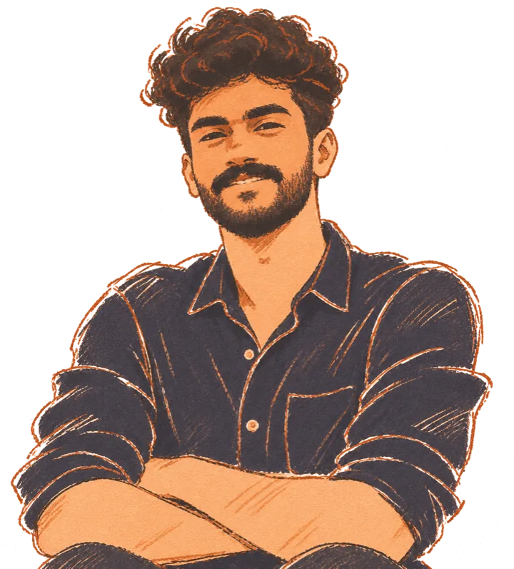
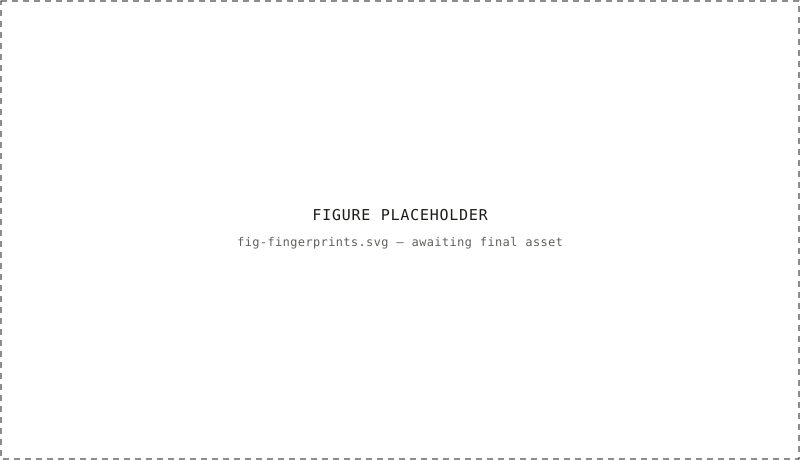

About

Hi, I’m Yaswanth.
I’m a machine learning researcher. I’ve worked on problems ranging from classifying newspaper text to Bayesian models of athletes’ facial expressions, and my current interest is football. My recent work uses unsupervised learning on player tracking data, representing runs as Bézier curves and clustering them into movement “fingerprints” that describe how each player moves.
I did my BS-MS in Data Science at IISER Thiruvananthapuram, graduating in 2026. My thesis used Bundesliga tracking data, in collaboration with the Institute of Exercise Training and Sport Informatics at the German Sport University Cologne. I’m looking for PhD positions and data science roles in sports analytics.
- Sports Hall of Fame, IISER TVM (2026)
- Inter-IISER Sports Meet: gold 2025, silver 2023 and 2024
- Captain, IISER TVM football, 2025
- Former Sports Secretary, IISER TVM
Research
Player Movement Fingerprints from Football Tracking Data
I built a pipeline that extracts off-ball runs from raw 25 Hz DFL Bundesliga tracking data, synchronised with event data, for nine matches. Each run is encoded as a quintic (degree-5) Bézier curve; the runs are clustered with Gaussian mixture models and combined with an 18-zone pitch grid into a movement profile for each player. I validated the profiles with permutation tests, bootstrap intervals and cross-validated baselines.
I’m now classifying runs into distinct types to capture more of how each player moves, and I’m preparing a paper from this work.

Research interests
Valuing off-ball movement; learned representations of player trajectories; generative models of movement conditioned on player identity; more broadly, what tracking data can reveal about football that event data cannot.
Publications
- Gouri Lakshmi S., Bhagyasree G. H., Gowry Nandana M., Yaswanth O. S., and Alwin Poulose. Global Refugee Analysis: Insights into Asylum Applications, Demographics, and Resettlement Trends. 2025 International Conference on Intelligent and Cloud Computing (ICoICC), Bhubaneswar, India, pp. 1–6. IEEE, 2025. doi:10.1109/ICOICC64033.2025.11052011
Selected work
- 2026 Net playing time from tracking and event data, on the public Bundesliga dataset of Bassek et al. (2025)
- 2026 Bayesian multilevel modelling of athlete facial expressions (with the Memmert group, DSHS Cologne)
- 2026 Interactive clustering demo on public Bundesliga tracking data (Streamlit prototype)
- 2025 Text classification and information extraction for newspaper archives (India AI project, Kerala Police)
- 2024 Geospatial analysis of satellite atmospheric data, Physical Research Laboratory